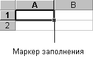

Если необходимо ввести некоторые данные, представляющие собой не повторяющийся текст, а некоторый ряд: числовой (например, 1; 2; 3 ...) или текстовый (например январь; февраль; март ...), вместо Автоввода нужно использовать Автозаполнение.

С помощью перетаскивания маркера заполнения ячейки можно копировать ее в другие ячейки той же строки или того же столбца. Если ячейка содержит число, дату или период времени, который может являться частью ряда, то при копировании происходит приращение ее значения. Например, если ячейка имеет значение "Январь," то существует возможность быстрого заполнения других ячеек строки или столбца значениями "Февраль", "Март" и так далее. Могут создаваться пользовательские списки Автозаполнения для часто используемых значений, например, названий торговых районов компании.
Назад | Содержание | Вперед